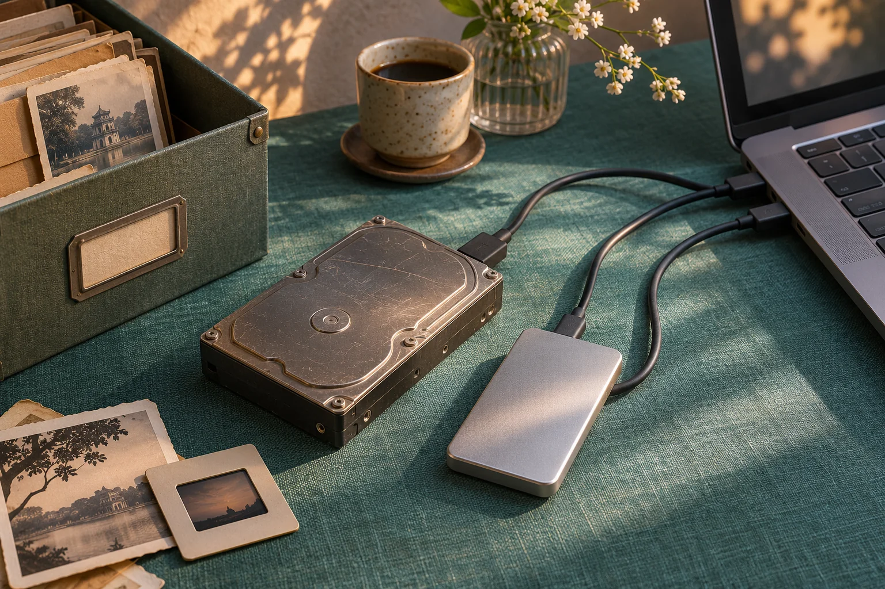

Sao lưu để có thể mở lại
Một thư mục đã chép xong mới là nửa đầu công việc. Nửa còn lại là mở tệp từ bản sao và biết phải làm gì khi thiết bị chính không còn truy cập được.

Bắt đầu bằng dữ liệu khó thay nhất
Lập danh sách ảnh gia đình, tài liệu công việc và các dự án không thể tải lại. Với ứng dụng giữ dữ liệu trong định dạng riêng, tìm chức năng xuất trước khi chỉ chép thư mục cài đặt. Nếu có thư viện ảnh đồng bộ, kiểm tra ảnh gốc thực sự nằm ở đâu, vì máy có thể chỉ giữ phiên bản thu nhỏ.
Giữ một bản tách khỏi thiết bị
Chép nhóm ưu tiên sang ổ ngoài hoặc một dịch vụ do bạn kiểm soát. Nếu chỉ đồng bộ giữa hai thiết bị, việc xóa nhầm có thể lan sang cả hai. Tách một bản theo mốc, đặt tên có ngày và giữ nó độc lập với thư mục đang chỉnh sửa. Sau đợt chép lớn, ngắt ổ ngoài đúng cách rồi cất nơi dễ tìm.
Thử khôi phục có chủ đích
Mở vài tệp ngẫu nhiên từ chính bản sao. Chọn cả một tài liệu lớn và một thư mục có nhiều tệp con. Nếu dùng bản sao mã hóa, xác nhận bạn biết mật khẩu và có cách lấy khóa khi máy chính thất lạc. Viết một dòng hướng dẫn ngắn cho lần khôi phục sau, kèm ngày kiểm tra gần nhất.